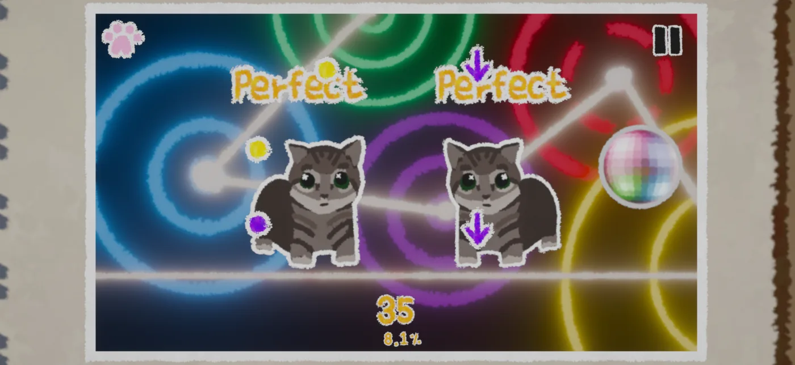
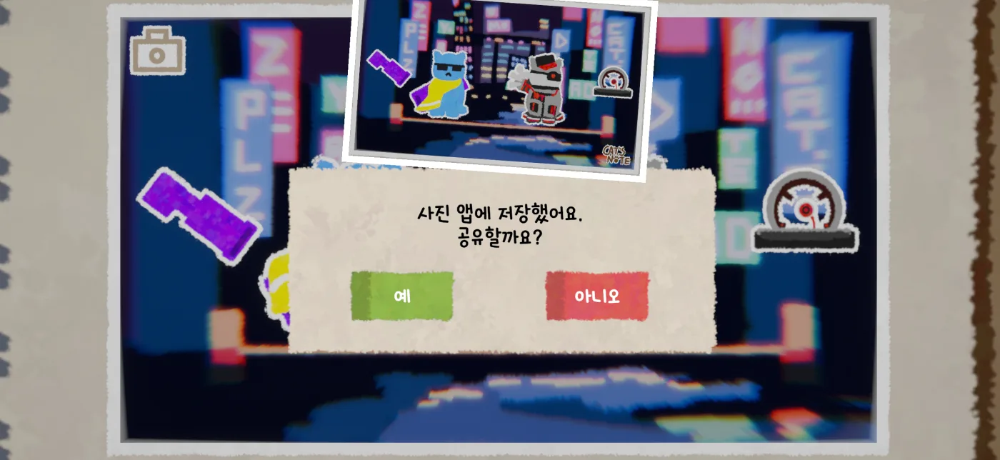

출시 · 라이브 운영 중
🐱 캣츠노트
2인 개발 모바일 리듬게임 · Android / iOS
▶ 캣츠노트 공식 트레일러 · 유튜브에서 보기



핵심 구현
- 오디오 싱크AudioSettings.dspTime 기반 곡 클럭으로 노트 타이밍을 계산하고, 일시정지·백그라운드 복귀 후에는 실제 재생 위치로 재동기화
- 속도 보정 판정노트 속도에 비례해 판정 범위를 보정해, 속도와 관계없이 체감 판정 시간을 일정하게 유지
- 자동 싱크 보정메트로놈 탭 평균으로 기기별 오디오 지연을 측정
- 오브젝트 풀 사전 생성채보를 미리 분석해 동시에 나오는 노트 수만큼 풀을 만들어 플레이 중 생성·파괴 제거
- 채보 에디터DAW처럼 음원 파형 위에 탭·롱노트를 배치하는 독립형 에디터로 출시곡 채보 제작
- 원격 콘텐츠 · 백엔드Cloudflare R2 + Addressables로 앱 업데이트 없이 신규 곡·아이템·가챠 배너 배포, Firebase 계정·세이브 연동
AI와 일하는 방식
Claude Code(터미널)와 Unity MCP를 연결해 씬과 코드를 AI가 직접 다루게 했습니다.
AI씬·컴포넌트 수정, 반복 구현, 버그 원인 후보 정리
나문제 정의, 판정·손맛 기준 설정, 결과 검수와 방향 결정
- AI 분석
- →
- 변경 후보 제시
- →
- 직접 승인
- →
- 반영
코드·씬 수정은 이 순서를 규칙으로 정해 AI가 의도치 않은 변경을 만들지 않게 했습니다.
설계 의도 자세히 보기
왜 dspTime인가 — 프레임 시간(Time.time)은 프레임이 밀리면 오디오와 어긋납니다. 오디오 엔진 시계를 기준으로 삼아 노트와 음악이 같은 시간을 보게 했습니다. 모바일은 앱 전환이 잦아서, 복귀 시점에는 시계 대신 실제 재생 위치를 정답으로 다시 맞춥니다.
왜 판정을 속도에 비례시켰나 — 판정을 거리로 계산하면 노트 속도를 올린 유저일수록 판정이 빡빡해집니다. 속도에 비례해 범위를 보정해서, 어떤 속도로 하든 같은 '시간' 여유를 갖게 했습니다.
왜 풀을 미리 계산했나 — 리듬게임은 순간 끊김이 곧 미스입니다. 곡 시작 전에 채보를 훑어 가장 붐비는 구간의 노트 수만큼만 만들어 두어, 메모리 낭비 없이 플레이 중 생성을 없앴습니다.